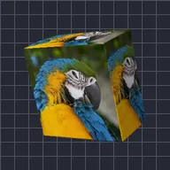

বক্স

লেয়ারটিকে আপনার বেছে নেওয়া প্রস্থ, উচ্চতা ও গভীরতার বক্সে মোড়ায়।
সেটিংস
| সেটিং | ধরন | রেঞ্জ | ডিফল্ট |
|---|---|---|---|
| রোটেশন X | কোণ | -3600° থেকে 3600° | -20° |
| রোটেশন Y | কোণ | -3600° থেকে 3600° | -35° |
| রোটেশন Z | কোণ | -3600° থেকে 3600° | 0° |
| প্রস্থ | সংখ্যা | 0.02 থেকে 5 | 0.75 |
| উচ্চতা | সংখ্যা | 0.02 থেকে 5 | 0.75 |
| গভীরতা | সংখ্যা | 0.01 থেকে 5 | 0.4 |
| স্মুদিনিং | সংখ্যা | 0 থেকে 1 | 0.15 |
| অবস্থান | পয়েন্ট (X, Y) | -5000 px থেকে 5000 px | 0 px, 0 px |
| স্কেল | সংখ্যা | 0.05 থেকে 10 | 1 |
| পার্সপেক্টিভ | সংখ্যা | 0 থেকে 1 | 0.5 |
| শেডিং | সংখ্যা | 0 থেকে 1 | 0.6 |
| আলোর কোণ | কোণ | -3600° থেকে 3600° | 135° |
| শাইন | সংখ্যা | 0 থেকে 1 | 0.3 |